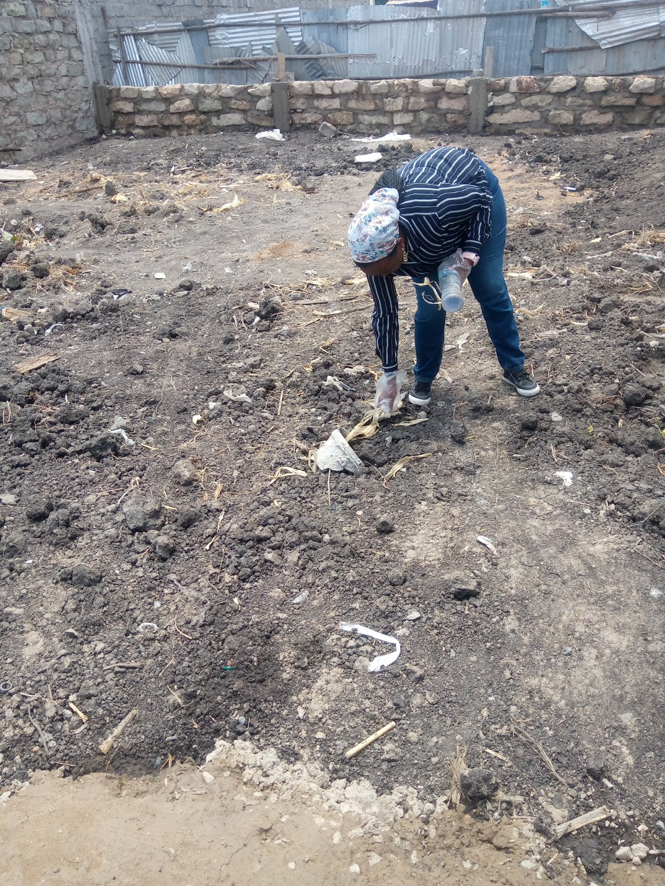
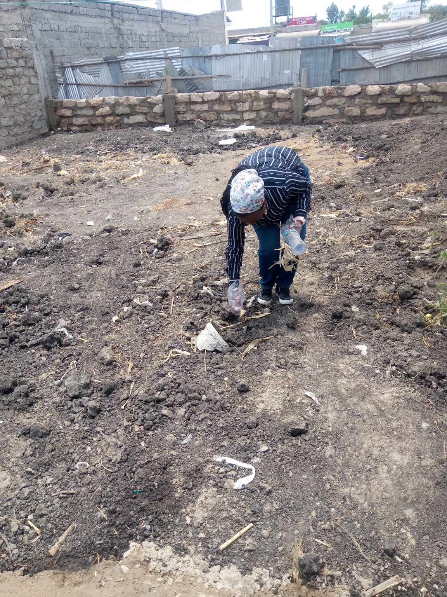
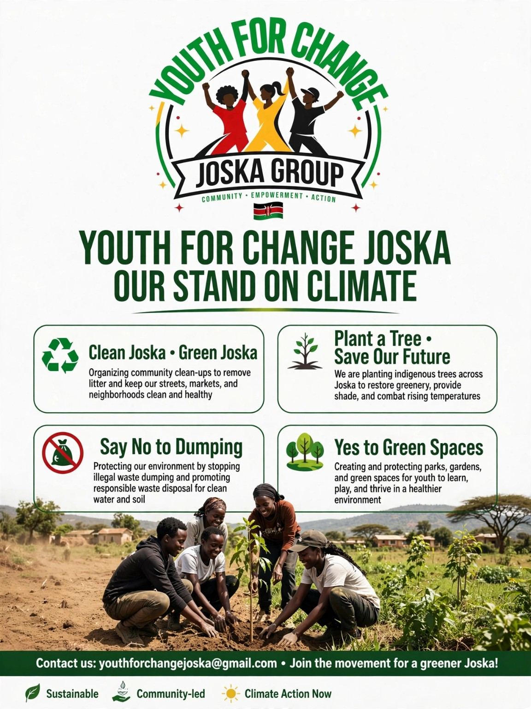
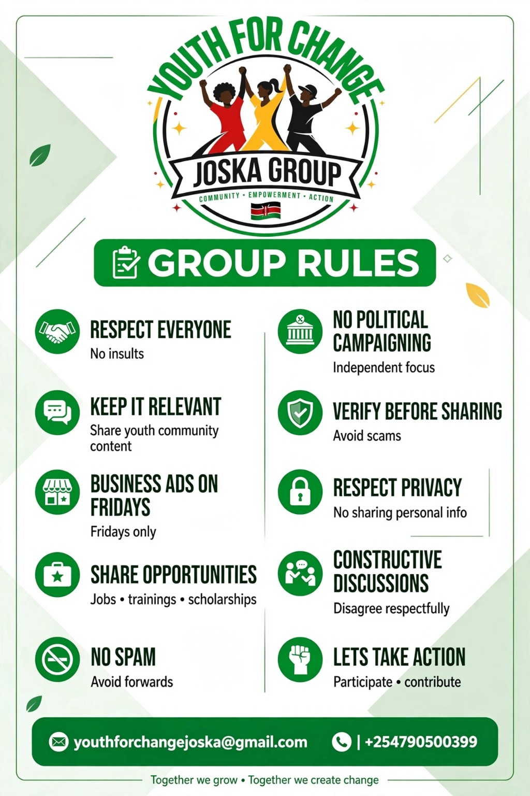

Young people.
Community action.
A better Joska.
Youth for Change Joska brings young people together to learn, connect, take practical action and create opportunities for a stronger, cleaner and more empowered community.
What we believe
Change doesn't have to begin with a big budget. It can begin with young people deciding to show up, learn something useful, help their community and bring others along.
Real people. Real action.
We document the work we actually do in our community, because credibility is built from evidence, not stock photos.




A local youth movement with a practical mindset.
Youth for Change Joska is a grassroots youth group focused on turning ideas into practical community experiences. We create spaces where young people can discover opportunities, learn from organisations and businesses, volunteer, build useful connections and contribute to positive change in Joska.
Environment
Community clean-ups, environmental awareness and practical action for a cleaner Joska.
Opportunities
Sharing credible opportunities, training, events, volunteering and pathways for young people.
Connections
Connecting youth with organisations, businesses, professionals and community initiatives.
Learning
Site visits, exposure activities and experiences that help young people explore what is possible.
Action first. Talk second.
Our activities are designed to give young people something concrete to participate in, learn from or build on.
Community & Environment
We organise and participate in clean-up activities and promote responsible environmental practices within the community.
Clean-upsEnvironmentCommunity actionYouth Exposure
We seek opportunities for young people to visit farms, businesses, organisations, conferences and other spaces where they can learn and explore possibilities.
Site visitsLearningEntrepreneurshipOpportunity Sharing
We connect young people to credible opportunities and useful information that can support their personal, professional and community development.
TrainingJobsEventsPartnerships
We work with organisations, businesses, community leaders and other changemakers where collaboration can create meaningful value for young people.
CollaborationPartnershipsMentorshipDon't just hear about opportunities. Get closer to them.
We want young people in Joska to have access to information, exposure and connections that can help them make informed choices about their future.
Discover
Find credible opportunities, conferences, training, volunteering and community programmes.
Explore
Take part in site visits and learning experiences that expose you to careers, businesses and new ideas.
Connect
Meet people and organisations doing useful work and build relationships that can lead somewhere.
What we're working on.
This section can be updated as activities are confirmed. No fake achievements, no imaginary impact numbers. We have enough of that on the internet.
Community Clean-up
Supporting youth participation in a community clean-up exercise. Details and meeting arrangements will be shared with participating members.
Youth Site Visits & Learning
Exploring opportunities for young people to visit local farms, businesses and organisations to learn and discover possibilities.
Opportunity Connections
Sharing relevant youth opportunities and connecting members with organisations, events and learning spaces.
Partnership can start with one conversation.
We welcome collaboration with organisations, businesses, farms, community initiatives, professionals and other groups interested in supporting youth learning, environmental action and community development in Joska.
Ways to collaborate
• Host a site visit
• Offer a learning session
• Support a community activity
• Share youth opportunities
• Provide mentorship
• Co-organise an initiative
Let's build something useful.
Youth for Change Joska is built around participation. Whether you want to join, collaborate, share an opportunity or support an activity, we'd like to hear from you.
Join the group
Use the group's WhatsApp invitation link or contact the group administrator to be added.
WhatsAppPartnerships & enquiries
For collaboration, site visits, youth opportunities or community activities, reach out through the group's official social channels.
Location: Joska, Kenya
Email: youthforchangejoska@gmail.com | Phone: +254 790 500 399 | Facebook: Youth for Change Joska